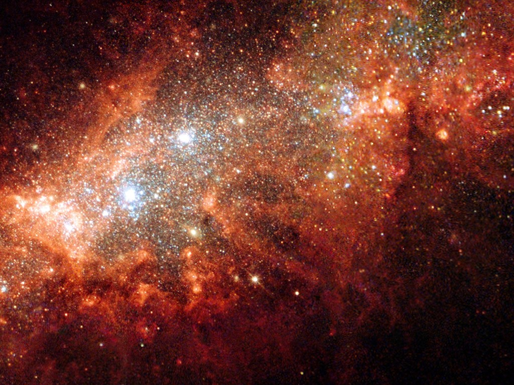

火星的天空

这是一篇以星际移民局为背景的故事。
火星的天空
我一直在做错误的选择，这些错误有些给自己带来的痛苦，有些伤害了别人。然而有那么一次，纵使是痛彻心扉的错，若时光回转，我还是会做出同样的选择，纵使我那时是如此自私自利。
红色的天空，红色的云。光在恒星内部挣扎了万年，却只花了十分钟便到达这颗行星的大气层。它与空气中的分子相遇，然后改变轨迹。
这是一颗不太适宜人类生活的行星。而我的任务，自然只是部署探测器，收集数据，然后将数据发送给前哨战，简单的很。最终，这些数据将会成为行星探测公司著名的行星数据库的一部分。
然而，我将要消失在这宇宙中，从未存在过。
聚会
我毕业那年，恰好是行星大学1两百周年。毕业典礼前夜，在行星形成与演化学院有个非常大的聚会，我也有幸见到星际移民局的几位重要人物。
然而聚会这类事情，始终都是极度令人反感的。所以我拍拍衣服，拿了盘点心，独自逃到了后院，在一颗巨树下面躺了下来。点点星光从树枝的间隙间落下来，像一张毯子，轻柔的，带着温暖，睡意一下涌了上来。
我们家这一支，往上数过去，可以追溯到火星第一批劳工移民。我出生在火星，在火星长大，现在倒是可以说，我毕业于火星最有权势的学校。说行星大学有权势，那是因为这所学校大多数研究内容都跟星际移民局有合作，毕业生也大多直接进入星际移民局，有些也可以进入一些驻地的使馆。
醒来的时候，整个学院都安静下来了，想来聚会的人差不多都离开了吧。我坐起身来，才发现角落的一个长凳上坐着两个人，光线暗弱，难以看清面目。我刚要离开，女人开口讲话，这才听出是王晴 Tina，便过去搭话。
Tina 身边坐着一位头发有些花白的中年男子，他穿了长袍安静的坐在那里，表情略带微笑。Tina 介绍说这位是她爷爷，也就是太空生物技术研究所所长。据我所了解，他便是第一个利用生物材料制造出无线电发射器的人。
那天夜晚，在天空的一个角落，一片深深的血红色正在蔓延，那是远处矿场的灯光被空气中的沙尘吸收散射。我心底的邪恶正在挣扎，最终我的灵魂被它吞噬殆尽。
初心
Tina 又开始拷问我，这是她已经问过我无数次的问题：你到底喜欢我什么？
除了要攀附她爷爷的关系，我并不知道她有什么特殊的。喜欢你傻乎乎吧，我回答道。她握拳狠狠的捶了我的背。
我们家族没有什么势力，像我这种人也不太可能进入星际移民局高层，而她的爷爷却能给我提供一部直通云霄的梯子。一定要好好的抓住 Tina，这是我最好的机遇。
我知道自己所爱，为了挤进高层，为了家族的荣耀，感情也不过是垫脚石。就算踏着血和泪上去，也一定值得。Tina 总是说我工作狂的样子好吓人。那一定是面目狰狞，贪婪的要拿出最漂亮的结果，要比任何人的成果都要好。这就是来自心底的黑暗吧。
要走了，出任务。Tina 不情愿的低声哼道。
嗯，注意安全。她走之后，我随手抓了一本行星科学增刊，赶往研究所。
火星上的大使馆需要的时候，特勤部门就会提供调查任务。Tina 就是一名特勤员，而她的特长是生物安全。在她入职的那天，我也被调入太空生物技术研究所负责行星生态改造的研究。
路上没有什么人，路灯昏暗，想必是系统故障了。抬头看到星空，猎户座像一张大网一样，似乎要将我罩住，使我永不的解脱。忽然想起，在入职的前一天晚上，我跟 Tina 一起跑到北山区露营。天冷得很，我握着她的手，回忆着多年前贫苦的日子。
想什么呢？她突然用脸蹭了着我的手，打趣道。
没什么，就是觉得生活改变好大。我懒懒地说着，低下了头，继续回想着那些时光。
我小时候很少看到父母，因为他们早出晚归。我自己做午饭，晚饭也要做好等他们回来。他们从来不能理解我为什么非要进入行星大学读书。多年的消磨早就让他们对生活麻木了，而我急于摆脱这种生活。我不断地警告自己，如果不能做到，我宁愿不要把新的生命带到这个世界上来，不要让它受这些苦。而今天，我的愿望终于要实现了，是么？我边想着，边甩甩头，企图回到现实来。
好啦，都过去啦。她突然挣开我的手，一下抱过来。继续说道，我知道你在想什么呢，小时候的那些苦，你我都不必再去想啦，我们的孩子也不会受这些苦的。
正在我回想间，天空突然变得刺眼。那是矿场的方向，一定发生了什么事情。我接通了 Tina 的电话。
温柔
谢天谢地，你没事就好。我气喘吁吁，仔细看着她红红的脸蛋。发生了什么事？
阿先死了。他没逃出来。他死了，怎么能这样就死了。Tina 边哭边说，身体往下沉。我拉住她，把她紧紧的抱进怀里。
嘘～没事啦没事啦。
在那样一个瞬间，我瞥见天空被这爆炸的火光照的血红。在我们和火光之间，有一个穿着格子衬衫的人在盯着我们。于是我抱着 Tina 转过身，背对着他。
说起特勤工作，我只见过一次。那次地球驻火星第四使馆2被盗，Tina 被派往协助调查。我当天恰巧休假，下班时间便过去接她。那个地球使节脾气暴躁，登鼻子上脸，对着她比划来比划去，我当时很生气，过去就想教训那人。Tina 一把拉住我，拿一只手指按在我的嘴上，意思是别插嘴。然后她给各位道歉，陪着笑脸听完了那帮混蛋的抱怨。
之前我从来都不能理解 Tina 这样一个性格柔弱的人怎么能胜任特勤工作，那次之后，我就再也没有出现在她的工作中。我们谈过特勤的问题，她坚持认为她做的是对的。也许吧。
这次爆炸事故之后，她拿到了一个很长的假期，天天陪我在研究所做研究。有天她兴冲冲跑过来，跑跑跳跳的拽着我去了另一个实验室，在通知栏停了下来。
我们做这个吧。她边说边拽我的胳膊。
我盯着通知栏上的通知，半晌说不出话来。
Tina，这是你的专业对吧，你确定做这个真的安全？
没事儿，这都做过很多实验了，理论也很完善了。
我们会变成什么呢？我心里不禁一阵恐慌。他们会给我们安装生物无线电通讯模块，这样就可以直接交换大脑的数据，而不需要用嘴说出来了。他们甚至还提供了卵细胞线粒体基因改造，让后代自己长出这样的通讯模块，并且传递下去。这个真的不会被伦理委员会调查么？3
正在疑惑，Tina 已经找来了负责人。所以，我就要变成怪人了，跟 Tina 一起。
散射
在散射理论中，两个电子会越来越接近，然后分开，距离越来越远，永无再见之时。
Tina 有时候会跑来听我讲课，不过从来不在我的课上讲话。但是有那么一次，我在给学生们讲恒星内部平衡，说到我们看到的太阳的光子，其实是很久前产生的，他们在太阳内不停的被散射，囚禁了长达万年，终于才能出来，进入我们的眼睛。然后她满脸幸福的样子，自言自语说，要是能凑近了看看恒星就好了。
我第一次见她那种夸张的表情。第二次见到，是我第一次向她敞开心扉，任由她通过通讯模块读取我对她的爱。这时候我才感觉到，原来自己说的因为她家的权势才跟她在一起这样的话，已经是沦为谎言了。她说将来等我拿到星际移民局的高层的职位，我们一起去补个蜜月吧。
那种幸福，也是我最后一次见到了。多数情况下，人的希望就像一个薄薄的气球，气球越来越大，直到最后碰上针尖，瞬间爆裂。
第二天她的爷爷被杀害了。她得知消息后在赶往现场的途中被注射了毒药。虽然经过抢救，但是没有醒过来。医院说需要一天之内拿到解毒剂，可惜现在火星没有储备。
我蹲在走廊的角落，感受着越来越沉重的心跳。嘴唇不听话的抖动着，泪水哗哗哗滚下来。我知道的，每次出事情，我第一反应都不是去解决问题，而是独自伤心。懦弱。愚蠢。
恒星
我从行星探测公司拿到了药物，条件是我作为行星勘探员外出采集数据。Tina 的治疗很成功，但是还没有等她醒来，我就被从医院拖走，登上了这艘飞船。临行前，他们发消息来说，Tina 醒来了。我下意识的使用了通讯模块，却徒劳无功，超出了最大通讯距离。
他们告诉我凶手被抓，并处以死刑。 Tina 现在很快乐，只是暂时失忆了。
我脚下的这颗行星，贫瘠而无任何生命的气息。我没有足够的燃料飞回火星，但是却能够飞往头顶这颗陌生的恒星，如那扑火的飞蛾，长眠在熊熊烈火之中。等待有那么一天，它耗尽燃料，爆发出光芒，而我，就会随这些碎片一起，成为一颗可以孕育生命的行星。

最近评论